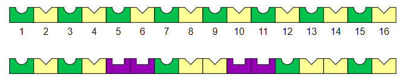
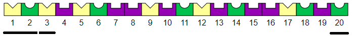
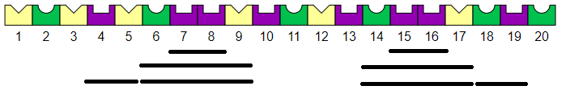
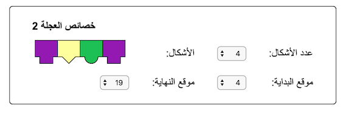

الحل
يمكنك أن ترى أن الهدف يتكون من نفس تسلسل 4 أشكال ، يتكرر 4 مرات. وبالتالي يمكن استنساخها مع لفة من 4 أوجه ، وتطبيقها على كامل الرسمة المطلوبة.
نلاحظ أن المربعات الأربعة الأولى والمربعات الثلاثة الأخيرة للهدف تحتوي على تبادل بين الطبعات الدائرية (الخضراء) والترايل (الصفراء).

يمكننا إعادة إنتاج هذا البديل عن طريق تكوين القائمة الأولى كما يلي:

يبقى استخدام الأسطوانة الثانية لتصحيح المربعات من 5 إلى 13.
يمنحك هذا وضع العلامات التي تحتاجها في هذه الصناديق.

لمساعدتنا في العثور عليها ، من المفيد مراعاة الطرق المختلفة التي يمكن أن تتداخل بها مسارات العجلات. فيما يلي بعض الأمثلة.

تتمثل إحدى الطرق في التركيز على الجزء الأول ، والبحث عن نمط لإنتاج بداية ونهاية المسار.
هناك العديد من الاحتمالات ، ولكن عندما ننظر إلى هذا المسار باستخدام عجلة:

نلاحظ أن معظم ما تبقى يمكن إنتاجه بواسطة عجلة ذات 4 أوجه مؤقتة:

يمكن بسهولة تغطية الباقي بواسطة عجلة ثالثة.
هناك طريقة أخرى تتمثل في محاولة اكتشاف نمط يظهر في عدة أماكن. يمكن أن نلاحظ على سبيل المثال في مكانين ، وهما بصمات أرجوانية مربعة جنبًا إلى جنب. إذا نظرنا عن كثب ، نرى أن التشابه يمتد إلى المربعين المجاورين ، ثم يتم تكرار هذا الجزء من نفس الكتلة المكونة من 4 مخازن مؤقتة:

نعود إلى نفس السبب بالنسبة للختم الثاني للنهج الأول.
إليك الحل الذي تم الحصول عليه في النهاية:

يتم عرض هذه المعلمات كما يلي:

المعلوماتية
تطبيق أسطوانة تطبع سلسلة من الأشكال والألوان عدة مرات يشبه استخدام تكرار الحلقات ، أحد لبنات البرمجة الأساسية.
بالإضافة إلى ذلك ، يمكن أن تحتوي القائمة على معلمات مختلفة ، ولكن لها دائمًا نفس الوظيفة ، أي تكرار نمط يتكون من عدد معين من الطوابع ، على مدى معين من الصناديق. باستخدام نفس مفهوم الأسطوانة ، يمكنك رسم العديد من الأنماط وفقًا للمعايير التي تختارها.
في علوم الكمبيوتر ، نستخدم كلمة دالة لوصف حقيقة أن تعتمد مجموعة من الإرشادات التي تقوم بإجراء أو عملية حسابية على معلمة واحدة أو أكثر. وظائف أخرى من اللبنات الأساسية للبرمجة.